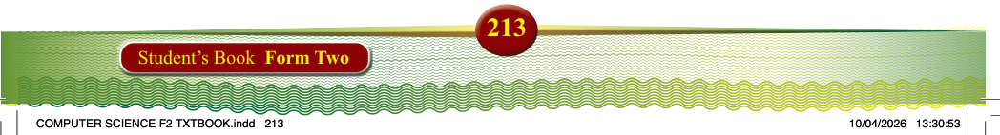
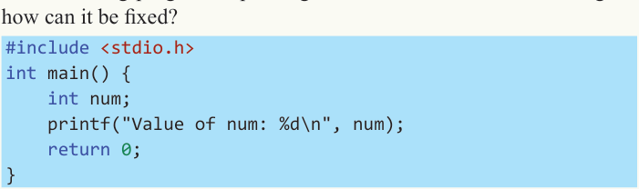
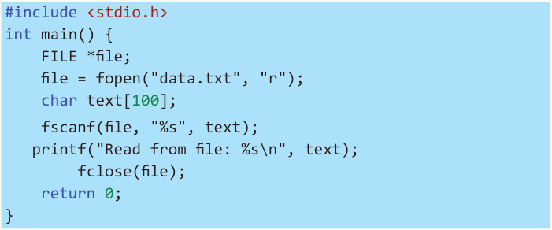
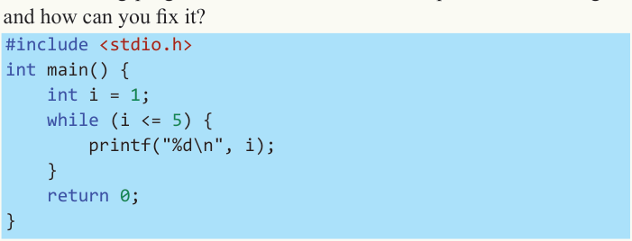
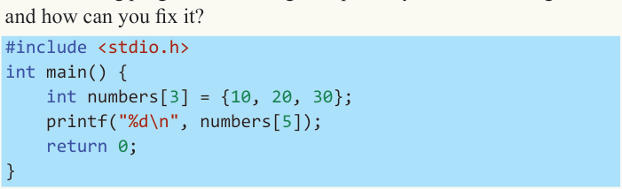

4. The following program is printing incorrect values. What is wrong, and how can it be fixed?

#include <stdio.h> int main() { int num; printf("Value of num: %d\n", num); return 0;
}
5. The following program fails to read a file. Find the error and fix it.

#include <stdio.h> int main() {
FILE *file; file = fopen("data.txt", "r"); char text[100]; fscanf(file, "%s", text); printf("Read from file: %s\n", text); fclose(file); return 0;
}
6. The following program is stuck in an infinite loop. What is causing this, and how can you fix it?

#include <stdio.h> int main() { int i = 1; while (i <= 5) { printf("%d\n", i);
} return 0;
}
7. The following program is crashing unexpectedly. What is causing the issue, and how can you fix it?

#include <stdio.h> int main() { int numbers[3] = {10, 20, 30}; printf("%d\n", numbers[5]); return 0;
}